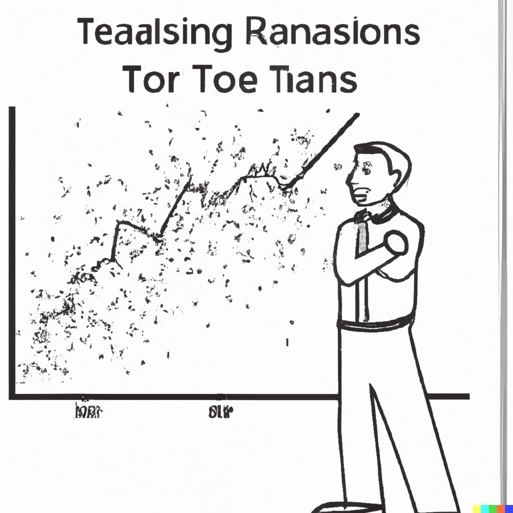
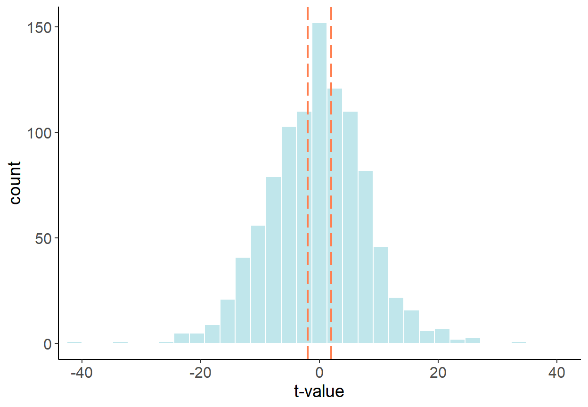
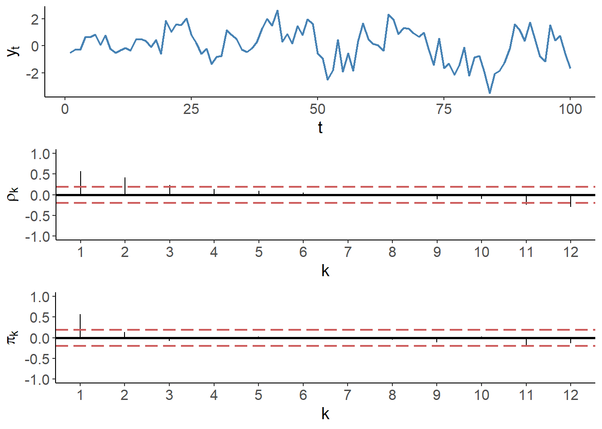
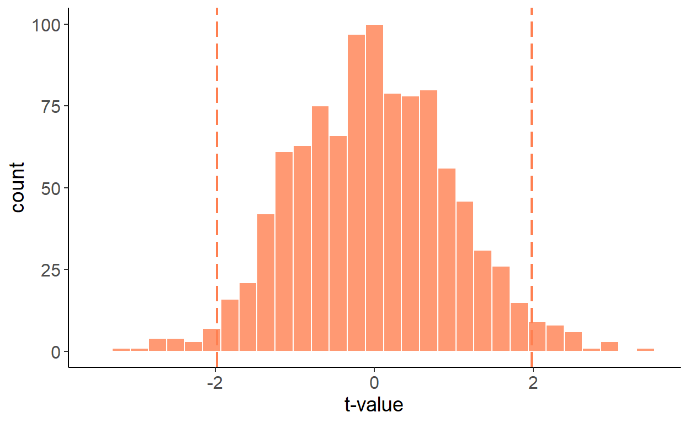
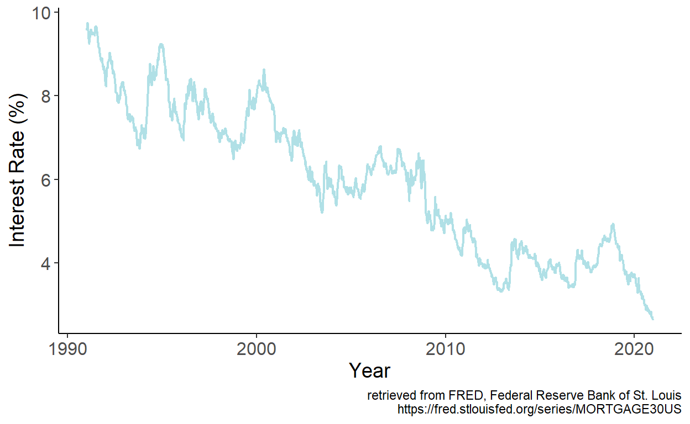
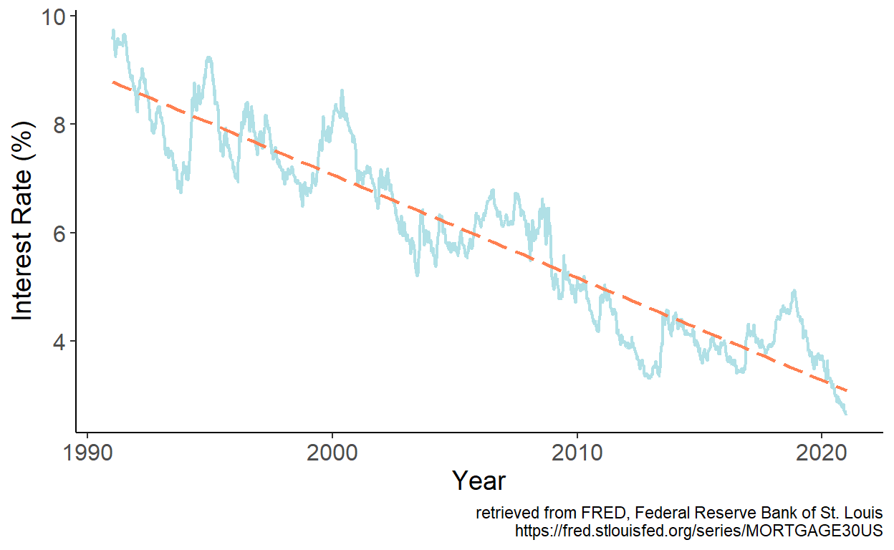
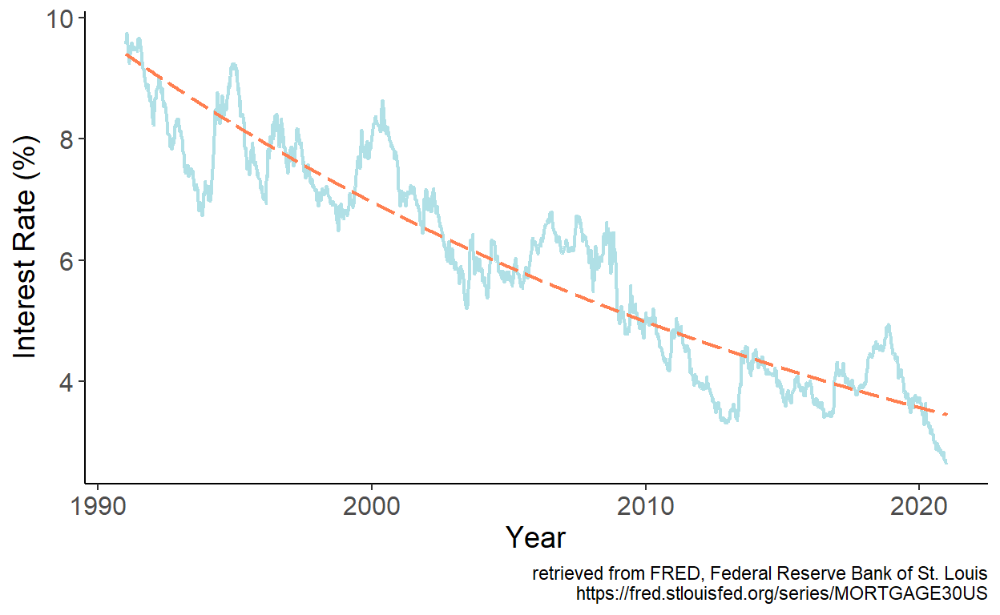
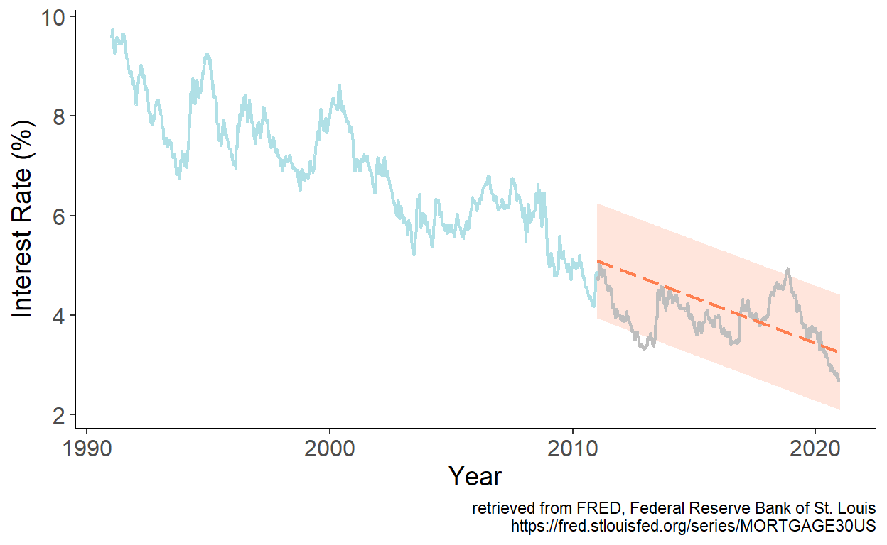

Chapter 4 – Trends

4.1 Trends in the Data
Trends are common in economic time series (and not only). A trend is a unidirectional change of time series over an extended period of time. Over an extended period of time, the direction of the change may change. That is, series that used to be trending upward may start trending downward. Interest rates before and after 1980s featured such pattern, for example. Moreover, even if a series are, on average, increasing (or decreasing), the rate of change may alter over time. Agricultural yields of cereal crops, for example, have been increasing at a decreasing rate over the past several decades.
Modeling and forecasting trending time series is a fairly straightforward task. But before we get to it, let’s examine the issues associated with ignoring the presence of trends when analyzing the time series data.
4.2 Spurious Relationships
Nothing about trending time series necessarily violates the classical linear regression model assumptions. The issue may arise, however, if an unobserved trending variable is simultaneously correlated with the dependent variable as well as one of the independent variables in a time series regression. In such case, we may find a (statistically significant) relationship between two or more unrelated economic variables simply because they are all trending. Such relationship is referred to as a spurious relationship.
4.2.1 Deterministic Trends
To begin, we will illustrate the issue using two random variables, each containing a deterministic trend. To keep things simple, we will consider linear trends, but the “findings” of this exercise can be generalized to any form of a deterministic trend (some of the key forms we discuss below). So, consider two trending variables: \[y_t = \gamma t + \nu_t,\;~~\nu\sim N(0,\sigma_{\nu}^2),\] and \[x_t = \delta t + \upsilon_t,\;~~\upsilon\sim N(0,\sigma_{\upsilon}^2),\] where \(Cov(\nu_t,\upsilon_t) = 0\). For simplicity, we can assume \(\sigma_{\nu}^2=\sigma_{\upsilon}^2=1\). Suppose, \(\gamma\) and \(\delta\) are some positive scalars, say, \(0.3\) and \(0.5\), respectively. That is, \(y\) and \(x\) are trending in the same direction. Below is an example of such time series:

If we were to estimate \[y_t = \alpha+\beta x_t + \varepsilon_t,\] we are likely to find the relationship between the two, in this case we will find \(\beta>0\), even though, we know, these variables are not related. To illustrate this, we will generate 1000 samples of size 120 for \(y\) and \(x\), and in each case we will estimate the parameter \(\beta\). The following graph illustrates the empirical distribution of these parameter estimates:

Luckily, we can easily “fix” the issue, by incorporating a trend in the regression: \[y_t = \alpha+\beta x_t + \eta t + \varepsilon_t.\] Once the trend is accounted for, the previously illustrated “bias” disappears. Using a similar simulation exercise as before, the following graph illustrates the empirical distribution of these parameter estimates:

In fact, this “fix” is equivalent to regressing a de-trended \(y\) on a de-trended \(x\). To de-trend a variable, we first run a regression: \(y_t = \gamma_0 + \gamma_1 t + \nu_t\), and then obtain the fitted values for some fixed trend (typically zero), that is: \(\tilde{y}_t = \hat{\gamma}_0+\hat{\nu}_t\), where \(\hat{\gamma}_0\) and \(\hat{\nu}_t\) are the parameter estimate and the residuals from the foregoing regression.
4.2.2 Stochastic Trends
A time series may also follow a stochastic trend. A random walk process, \(y_t=y_{t-1}+\zeta_t\), represents a stochastic trend.
As it turns out, a spurious relationship can be detected between two stochastic trend processes. Suppose, in addition to the aforementioned random walk process, we have another random walk, \(x_t=x_{t-1}+\xi_t\). As before, to keep things simple, suppose \(\zeta\sim N(0,1)\) and \(\xi\sim N(0,1)\), and \(Cov(\zeta_t,\xi_t)=0\). The two variables, obviously, are not related. And yet, if we regress one on another, we are likely to reject the null more frequently than we should. The following graph illustrates the empirical distribution of t statistics: 
The previous ‘fix’, which involved adding a trend in the regression, doesn’t quite work here, as observed in the following histogram. 
But there is a fix to the issue, and that involves first-differencing both series and regressing \(\Delta y_t\) on \(\Delta x_t\), which resolves the issue:

4.3 Modeling
As seen, accounting for trends in a time series can help us resolve some regression issues. But a trend in and of itself can be an inherent feature of a times series. To that end, we can, and indeed should, account for trends, when they are present, to forecast time series. In what follows, the main focus is deterministic trends. We will address stochastic trends in another chapter.
The simplest (and perhaps most frequently applied) model to account for the trending time series is a linear trend model: \[y_t = \alpha + \beta t\]
Other likely candidate trend specifications are polynomial (e.g. quadratic, cubic, etc.), exponential, and shifting (or switching) trend models, respectively given by: \[\begin{aligned} y_t &= \alpha + \beta_1 t + \beta_2 t^2 + \ldots + \beta_p t^p \\ y_t &= e^{\alpha + \beta t}\;~~\mbox{or}\;~~\ln{y_t} = \alpha + \beta t \\ y_t &= \alpha + \beta_1 t + \beta_2 (t-\tau)I(t>\tau),\;~~\tau\in\mathsf{T} \end{aligned}\]
In what follows, we will model and forecast linearly trending time series. Any polynomial trend model is an extension of a linear trend model, and shares the general characteristics of the latter. An exponential trend model, from the standpoint of modeling and forecasting, is largely equivalent to a linear trend model fitted to the natural logarithm of a series. For a time series \(\{y_t: t=1,\ldots,T\}\), the natural logarithm is: \(w_t = \ln{y_t}\). Some of the benefits of such a transformation are:
- easier to interpretation and comparison across different series (e.g., GDP growth across different countries);
- homogenized (across time) variability of a time series;
- possibly improved forecasting accuracy.
We will cover the shifting/switching trend models in another chapter.
Trends are (relatively) easy to model and forecast. Caution is needed, however, with (higher order) polynomial trends, as they may fit well in-sample, but cause major problems out-of-sample.
4.3.1 Trends in mortgage rates
Consider monthly series of the U.S. mortgage rates (sourced from the online data portal of the Federal Reserve Bank of St. Louis) spanning the January 1991 – December 2020 period.
Figure 4.1: 30-Year Fixed Rate Mortgage Average in the U.S.
The series feature apparent downward trend, which we can approximate by a linear trend model. We estimate the model parameters by regressing interest rates, which we denote by \(y\) on time index, which we denote by \(t\). Fitted values are then given by: \(\hat{y}_t = \hat{\alpha} + \hat{\beta} t\), which we overlay onto the time series:
Figure 4.2: Fitted linear trend
It appears that the linear trend well approximates the general long-term pattern of the time series. One potential issue becomes immediately apparent, however. If we were to present a multi-decade prediction, at some point, forecasts will enter the negative range, which makes no economic sense.
To avoid the issue, we may favor an exponential trend model instead. We estimate the model parameters by regressing interest rates, which we denote by \(y\) on time index, which we denote by \(t\). Fitted values are then given by: \(\hat{y}_t = \hat{\alpha} + \hat{\beta} t\), which we overlay onto the time series:
Figure 4.3: Fitted exponential trend
As it turns out, the exponential trend also well approximates the general long-term pattern of the time series. And, moreover, there is not risl for forecasts to ever take on a negative value, thus remaining economically sensible. Whether linear or exponential trend model yields a more accurate short-term forecasts, is a matter of forecast accuracy testing.
4.4 Forecasting
The predictors of the deterministic trend models are pre-determined, which means, after fitting the model, we can readily obtain point and interval forecasts for any horizon \(h\).
If a linear trend model is assumed, then a realization of the stochastic process at forecast horizon \(h\) is: \[y_{t+h} = \alpha + \beta (t+h) + \varepsilon_{t+h},\] where \(\varepsilon_{t+h}\sim iid~\text{N}(0,\sigma^2_{\varepsilon})\) is the error term.
Point forecast of \(y_{t+h}\) is given by: \[\hat{y}_{t+h|t} = E(y_{t+h}|\Omega_t;\hat{\theta}) = \hat{\alpha} + \hat{\beta} (t+h)\]
Let’s ignore parameter uncertainty at the moment, so that \(\hat{y}_{t+h|t}=y_{t+h|t}\). The forecast error, then, is: \[e_{t+h|t} = y_{t+h} - y_{t+h|t} = \varepsilon_{t+h}\]
The forecast variance, then, is: \[\sigma_{t+h|t}^2 = E(e_{t+h|t}^2) = E(\varepsilon_{t+h}^2) = \hat{\sigma}^2_{\varepsilon},\;~~\forall\;h\]
From this, we can obtain interval forecast at any horizon, which is: \[y_{t+h|t} \pm 1.96 \hat{\sigma}_{\varepsilon}.\]
To illustrate the foregoing, let’s revisit the U.S. mortgage rates data, and obtain point and interval forecasts for periods from January 2011 onward based on parameter estimates using data up to and including December 2010.
Figure 4.4: Linear trend forecast
Several characteristics of the deterministic trend forecasts:
- they tend to understate uncertainty (at long horizons as the forecast interval does not widen with the horizon);
- short-term trend forecasts can perform poorly; long-term trend forecasts typically perform poorly;
- sometimes it may be beneficial, from the standpoint of achieving better accuracy, to forecast growth rates, and then reconstruct level forecasts.
Page built: 2022-10-12 using R version 4.1.2 (2021-11-01)